广胜寺
广胜寺分上寺、下寺和水神庙。这篇整理飞虹塔、上寺弥陀殿、天中天殿和下寺，重点看琉璃构件、造像组合、彩塑背光和壁画流散。
“广胜三绝”中的元代壁画，通常指水神庙明应王殿现存的祈雨、行雨、酬神等壁画；本篇末尾的《药师佛佛会图》《炽盛光佛佛会图》，则原在下寺后殿，后来流散海外。这是两组不同的作品。
一、飞虹塔：砖塔与琉璃外壳
飞虹塔现塔建于明正德十年至嘉靖六年（1515—1527），八角十三层，通高47.31米。主体由青砖砌成，二层以上外表镶嵌琉璃面砖、琉璃瓦和仿木构件。塔身逐层收分，檐端连线接近斜直线，轮廓与普通木构楼阁并不相同。
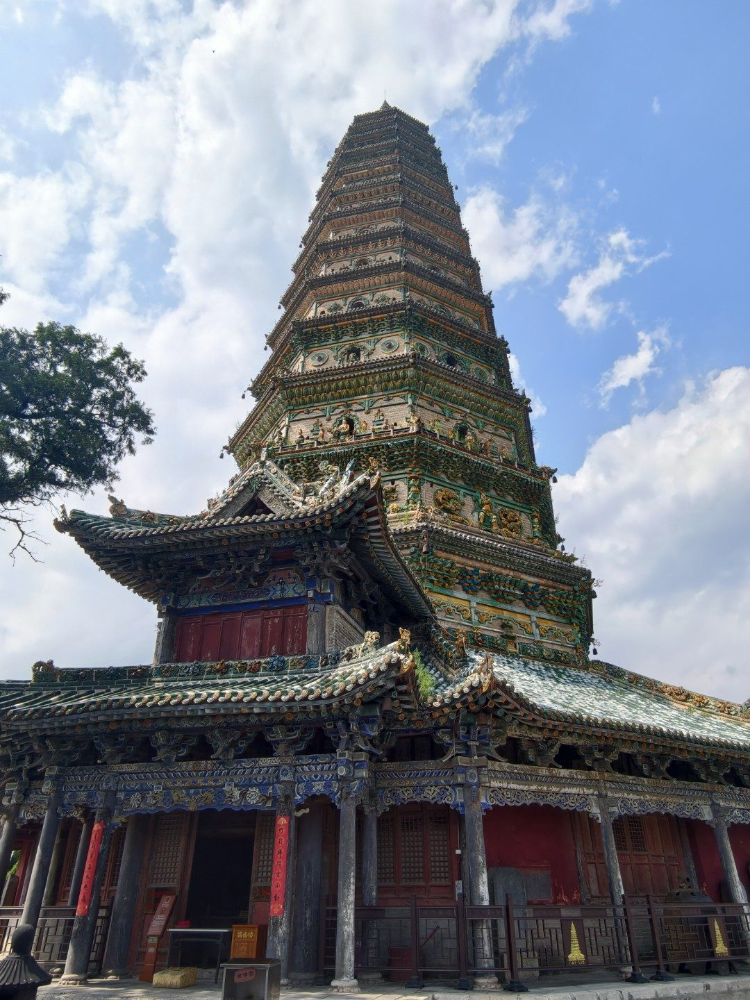
底层木构围廊和南面抱厦加建于明天启年间。围廊木架、塔身砖砌和外部琉璃是三个不同层次：木构围廊保护塔基，砖塔承担主体荷载，琉璃主要形成防水和装饰表层。
飞虹塔及广胜寺其他建筑留有多处工匠题款。飞虹塔九层莲瓣上有“匠人尚延禄、张连文、王述章造”，广胜寺碑刻中也留下洪洞公孙村琉璃匠乔君禄的籍贯与姓名。这些记录结合洪洞本地的制陶传统，为了解琉璃烧造者提供了具体线索。

二、琉璃仿木构件：看见名称，也看见功能
塔身把瓦、斗栱、栏板、垂莲柱和楼阁都做成了琉璃。所谓“仿木”，首先是形制模仿：琉璃斗栱保留斗、栱、昂等木构外观，主要起装饰和表层防护作用，主体荷载仍由砖塔承担。
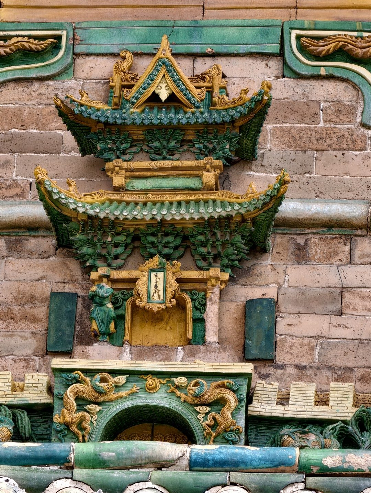
正脊位于屋顶前后两坡交会处的最高位置，脊端常见鸱吻，中央可立脊刹。鸱吻做成张口吞脊的兽形，既有收束脊端的构造作用，也积累了镇火等象征意义。套兽位于角梁梁头，风铎悬在檐下，各自的位置与功能不同。

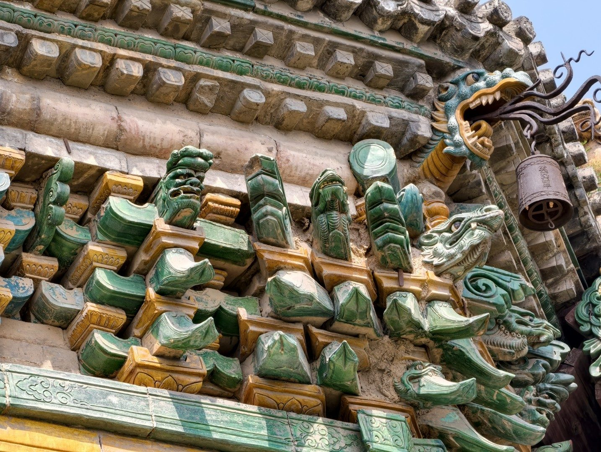
斗栱上还可见人脸、兽首和托举姿态的人物。木构建筑中的角神，位于转角斗栱由昂之上，顶端支撑角梁，《营造法式》记有“若宝藏神或宝瓶”的形式。角神并非密宗专属；飞虹塔上的托举人物，也可以结合转角和支撑位置来观察。
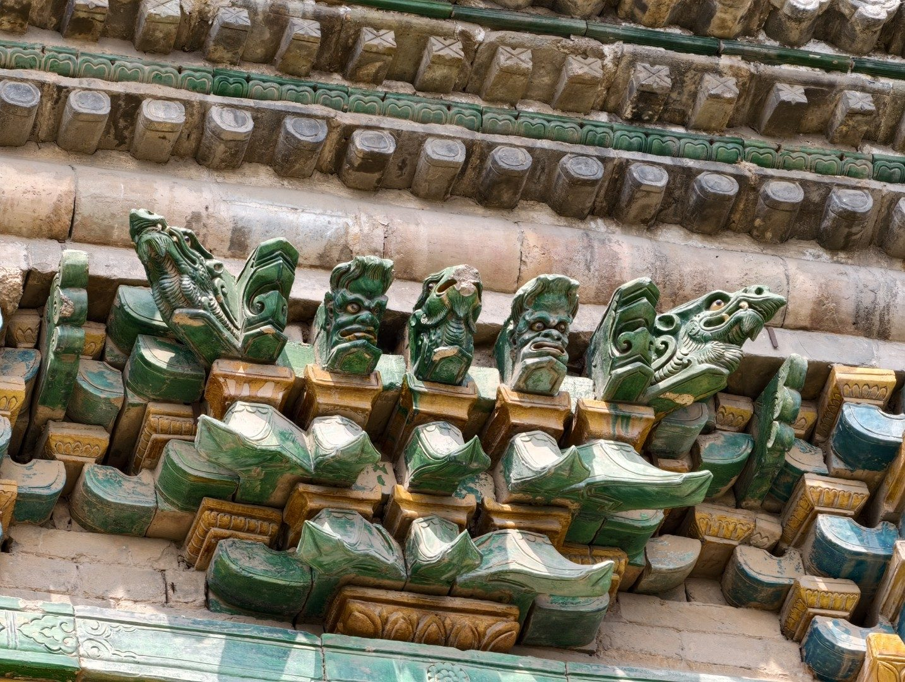
三、塔身人物与佛龛：外檐护法与龛内主尊
檐角和转角处常见托举、跨兽的力士形象，在视觉上承担护卫和支撑的作用。佛教中的金刚力士与建筑中的角神都可能呈托举姿态：前者按护法身份命名，后者按结构位置命名，二者观察角度不同。
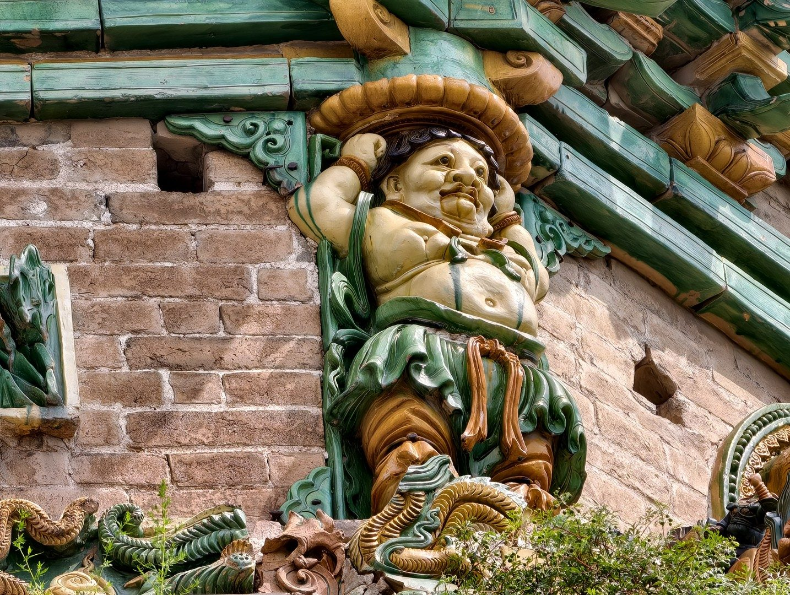
甲胄人物属于塔身的天王、金刚系统。飞虹塔相关建筑记录中有凤凰居中、披甲跨兽金刚分列两侧的配置，中央大鸟也因此更适合放在凤鸟与护法金刚的组合中理解。

塔身佛龛则构成正式的礼拜空间：主尊居中，胁侍、楼阁和花卉围绕。龛形虽然多变，主尊与胁侍的主次关系始终清楚。
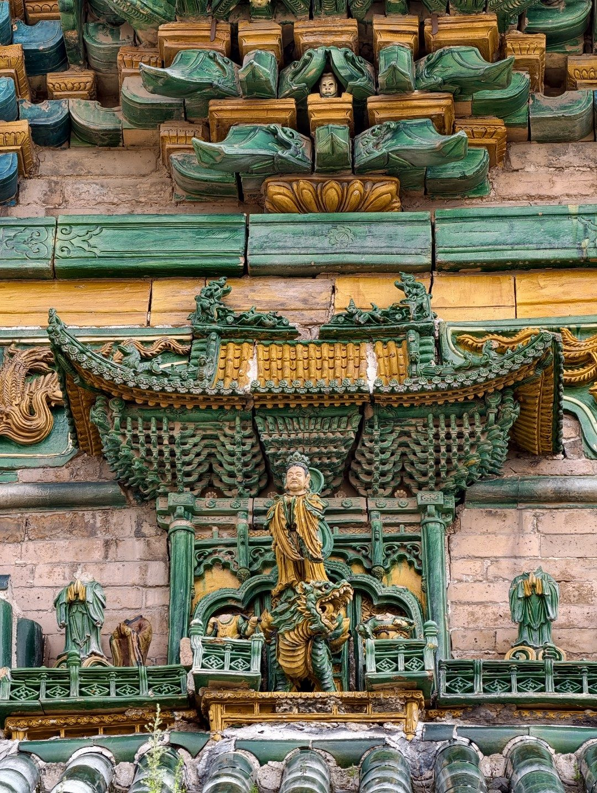
这块琉璃壁面中央有塔，两侧坐像头部残损，可与《法华经·见宝塔品》的二佛并坐题材对照。经典图像中，多宝佛从塔中分出半座，请释迦入塔并坐，佛塔因此成为构图中心。
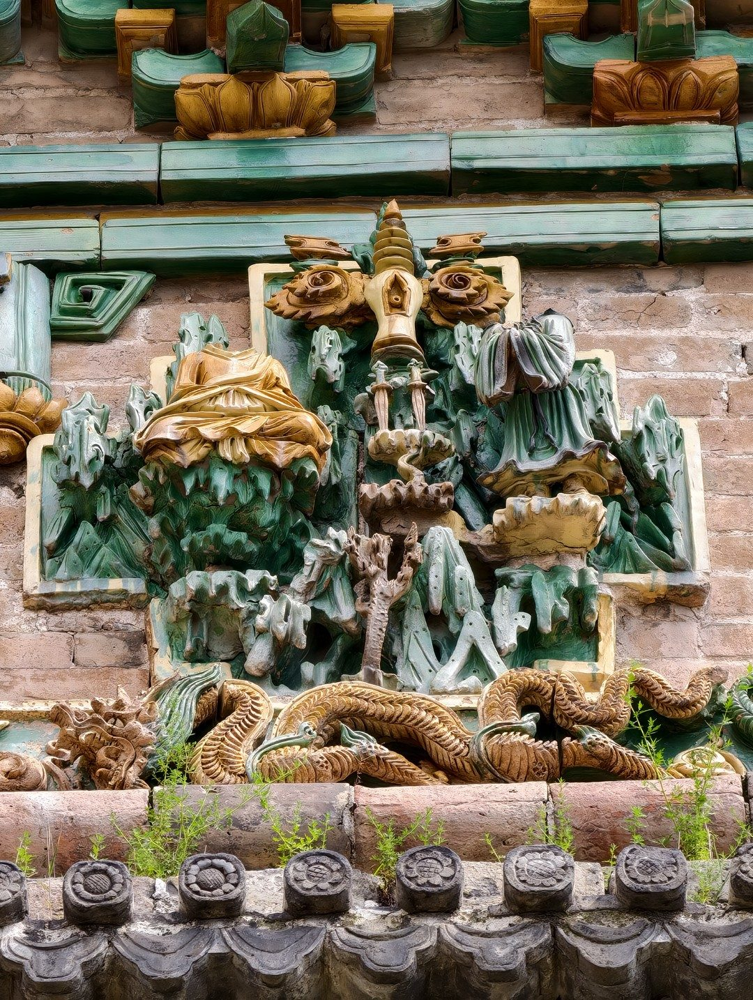
四、围廊文字瓦当与塔内造像
围廊檐口有文字瓦当，一组可辨“南无阿弥陀佛”，另一组与佛顶咒、白伞盖咒语相联系。名号和咒语进入瓦当，文字本身也成为建筑装饰的一部分。
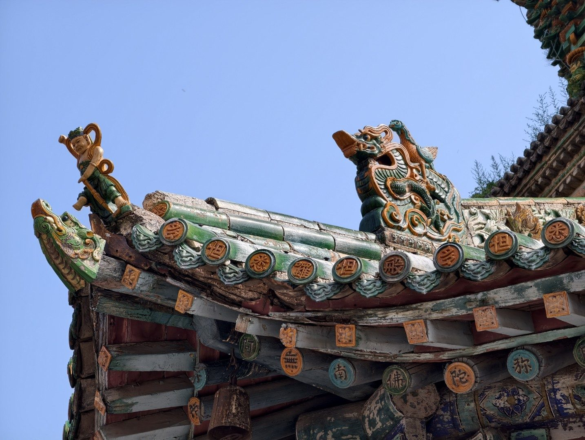
围廊木梁上的蓝绿彩画与塔身琉璃分属两种工艺：前者绘于木构表面，后者为陶胎施釉烧造。两者并置，呈现出加建围廊与原有塔身的材料差异。
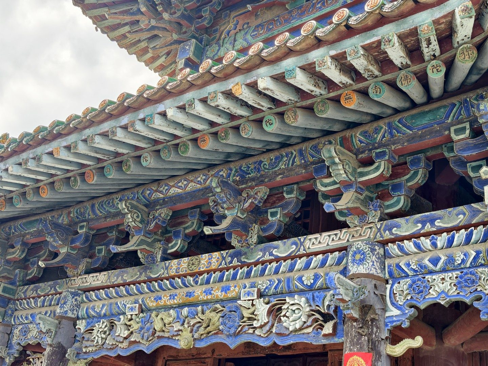
塔心圆窗内的铜佛为释迦牟尼佛，窗下另有布袋和尚形象的大肚弥勒。布袋和尚是五代以后中国弥勒信仰中的重要化身形象，与常见的比丘相弥勒、天冠弥勒相比，更接近民间生活。

五、弥陀殿：西方三圣与《赵城金藏》
飞虹塔后的弥陀殿保留元代梁架结构，明代又有重修，单檐歇山顶。它的价值不只在造像，也在木构：殿内使用大斜梁并减少部分梁架，形成较开阔的室内空间。
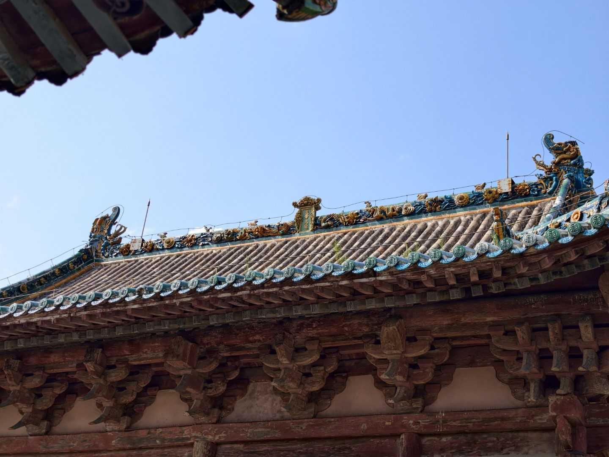
殿内正中为铜铸阿弥陀佛，两侧为观世音菩萨和大势至菩萨，合称“西方三圣”。观音常以冠中化佛为标识，大势至常以宝瓶为标识，这两处冠饰是辨认左右胁侍的要点。
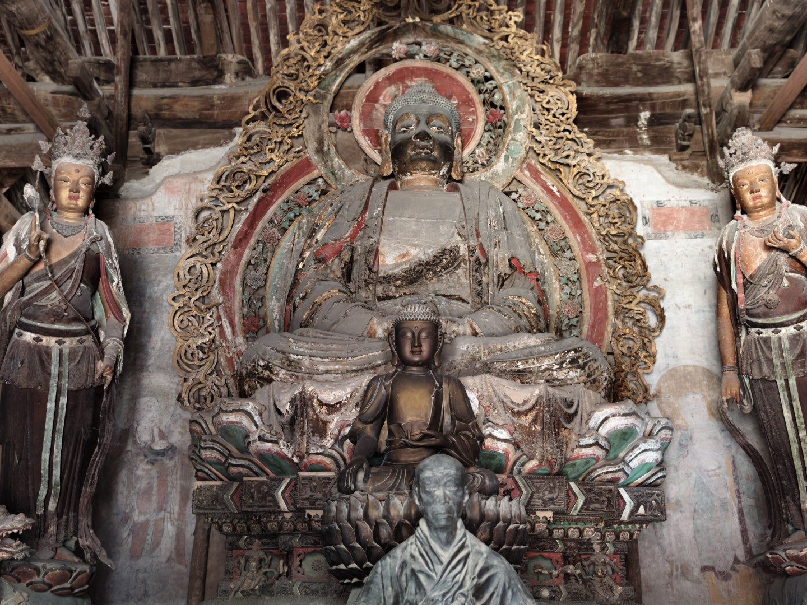
殿内红色藏经柜是《赵城金藏》的原存放处。1933年，这部金代刻印的汉文大藏经在这里被发现，后来主要入藏国家图书馆。它与敦煌遗书、《永乐大典》《四库全书》并称国家图书馆四大镇馆之宝。今日殿内保留红色藏经柜，经卷主体则藏于国家图书馆。
六、天中天殿：三身佛与四菩萨
天中天殿又称毗卢殿，保留元代建筑结构，明弘治十年（1497）重修。殿内三佛四菩萨为明代彩塑。三佛从东至西依次是报身卢舍那佛、法身毗卢遮那佛、应身释迦牟尼佛；四菩萨为文殊、普贤、观音、地藏。
三身佛不是三个各自主管一方的佛，也不是横三世佛。法身指佛法真理之身，报身指修行圆满、受用庄严之身，应身或化身指随众生因缘示现之身。中央主尊胸前结毗卢印，与法身毗卢遮那佛的身份相应。

七、彩塑背光：木骨、泥塑与贴金
三尊主佛身后接近梁架的高大装饰是彩塑背光。相关研究记载其为木质胎骨，以泥塑形，再施彩绘和贴金；中央背光高约6.5米。木骨榫卯提供框架，圆雕、浮雕和悬塑共同形成前后层次。
背光最外层由不同形态的火焰纹组成，内部还有龙凤、缠枝纹、小佛和人物故事。早期石刻、壁画中的背光往往较平面，这里却把“光”做成了有厚度的空间：近处是卷草和火焰，深处有龙凤、人物和小佛。主尊坐在前方，背光则像一座向梁架展开的佛国。
中央背光中还可见与炽盛光佛信仰有关的出行、星神等图像，使主尊身后的空间兼具佛光、护法与星神叙事。
殿内壁画和壁面佛龛也各有体系。沿壁木龛供三十五佛，壁画中有五十三佛，两者共同对应八十八佛礼忏题材；后壁另有十二圆觉菩萨壁画。三身佛、八十八佛和十二圆觉分别构成殿内不同的图像层次。
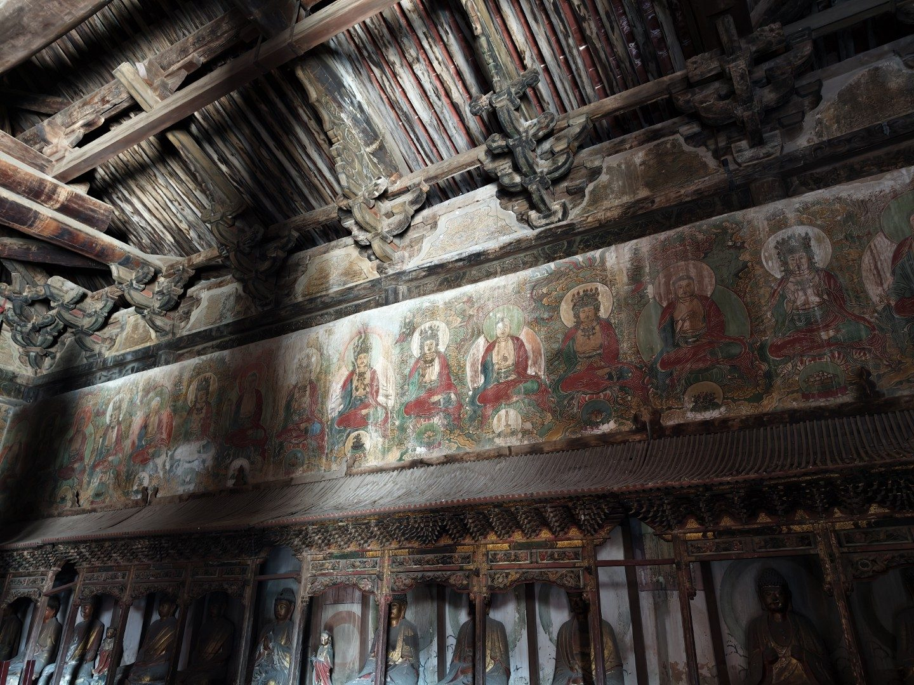
八、下寺：元代木构、山面构件与空白壁画墙
下寺后殿建于元至大二年（1309），以后多次重修。减柱造是它的重要特点：按开间本应设金柱十二根，实际只用六根，其余减去，以梁架变化换取开阔的礼佛空间。金柱减少后，柱、梁和内额共同重新组织受力。
山面顶端可见悬鱼与惹草。《营造法式》称垂鱼、惹草，位置在博缝板交会处，首先有遮缝、加强山面木装修的作用，后来才发展出丰富纹样。羊续“悬鱼拒贿”的故事，后来又为这一构件增添了清廉寓意。

殿内可见千手千眼观音、文殊、普贤和罗汉等陈设。千手千眼表现观音遍护、遍观的慈悲愿力；文殊、普贤与罗汉分列周围，构成今日殿内的供奉格局。

下寺后殿东西山墙原有两铺大型佛教壁画。1929年《重修广胜下寺佛庙序》记载，因殿宇倾塌、修庙无资，僧人与士绅于1928年议售壁画，得银洋一千六百元用于修庙。这次出售以修庙筹款为名，反映出殿宇倾圮、经费匮乏与文物流散交织的背景。
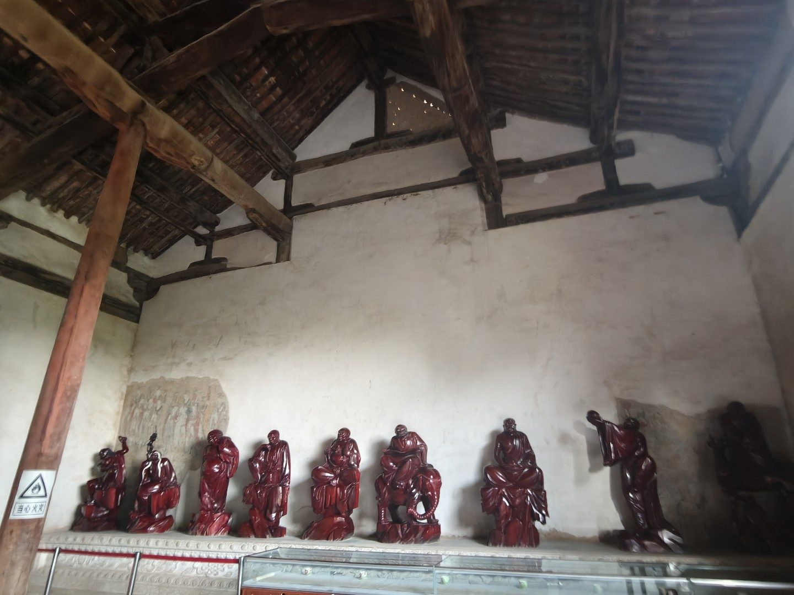
原西壁《炽盛光佛佛会图》现藏纳尔逊—阿特金斯艺术博物馆，东壁《药师佛佛会图》现藏纽约大都会艺术博物馆；同殿南壁《菩萨写经图》残片入藏辛辛那提艺术博物馆，北壁残片入藏底特律艺术博物馆。宾夕法尼亚大学博物馆另藏有下寺前殿壁画，属于另一组作品。
今天殿内的大片白墙记录着壁画离开建筑后的空缺。墙前塑像和残留画痕，提示这些艺术品从宗教空间转入博物馆的历史。
主要核对资料：
- 新华社《洪洞广胜寺，梁林叹珍奇》：飞虹塔、工匠题款、《赵城金藏》、减柱造与下寺壁画
- 《世界佛教美术图说大辞典》“广胜寺飞虹塔”
- 陈少华《论广胜寺毗卢殿彩塑背光艺术》：三身佛、四菩萨及背光材质和结构
- 芝加哥大学“广胜下寺壁画的流转与重识”：1929年碑文、壁画原位及海外馆藏
- 古建筑构件说明：角神、悬鱼与惹草
- 大都会艺术博物馆藏《药师佛佛会图》藏品记录